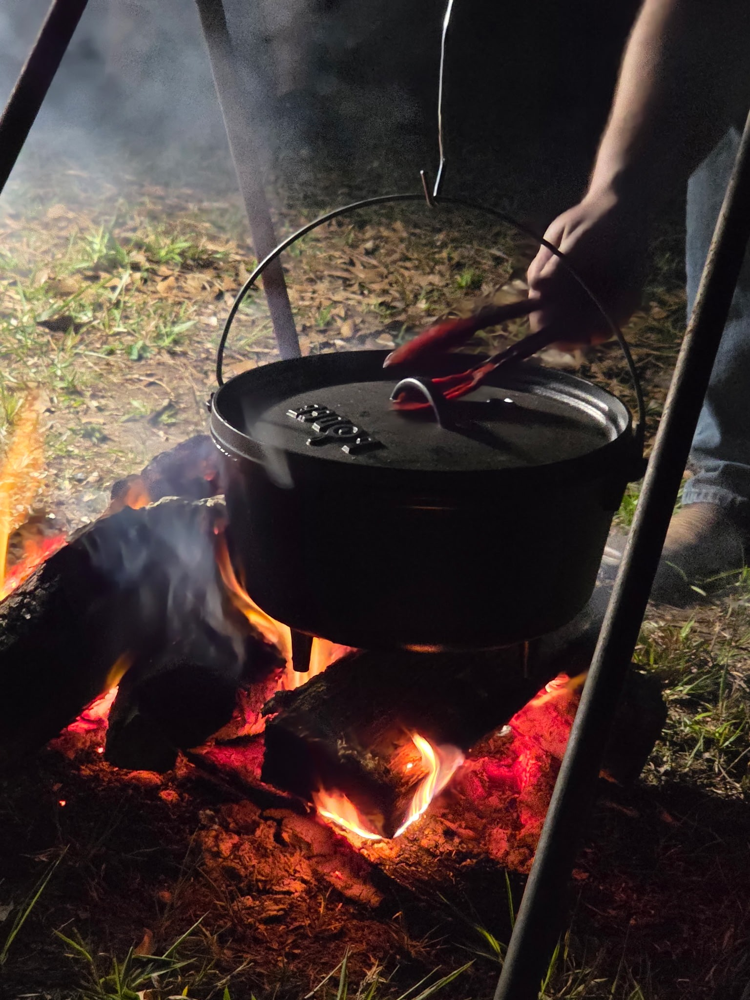

A
Why it exists
To give men a place to unplug, get clear, reconnect with God, and be shaped through shared hardship, worship, and honest conversation.
A rugged, faith-centered weekend built to strip away noise, call men higher, and create space for breakthrough.
The official Man Camp site defines the event as a three-day, off-the-grid, primitive camping experience for men. It also says the weekend is intentionally built to challenge men physically, mentally, and spiritually. citeturn733656view0
It is not presented as a soft conference. The emphasis is on challenge, tribe, and meaningful spiritual movement. The official site specifically talks about pushing beyond comfort, finding your tribe, and making your mark. citeturn733656view0

To give men a place to unplug, get clear, reconnect with God, and be shaped through shared hardship, worship, and honest conversation.
Men who want more than routine, comfort, or surface-level spirituality. Men who need time away, challenge, and a stronger sense of purpose.
Outdoor atmosphere, campfire rhythm, worship, teaching, challenge, brotherhood, and the kind of conversations that rarely happen in ordinary life.

Man Camp South is positioned to feel cinematic and masculine without becoming overbuilt or cheesy. That means strong visuals, straightforward language, clear next steps, and room for the event to grow over time.
The official site also uses testimonials that repeatedly describe the experience as life-changing, off-grid, confidence-building, and spiritually significant. citeturn733656view0